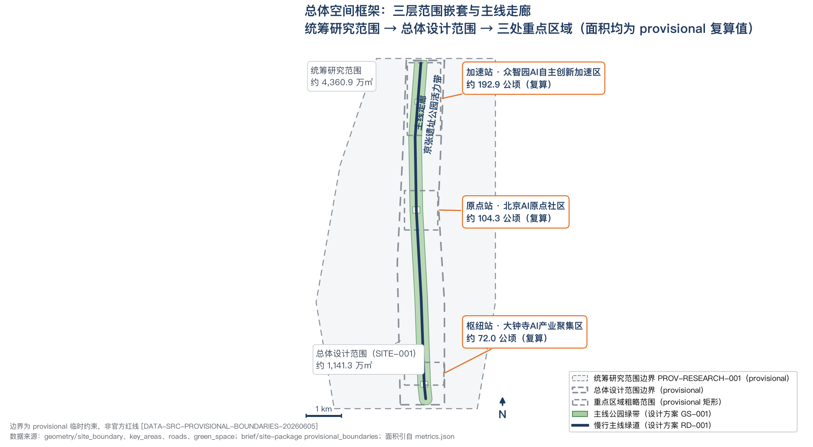
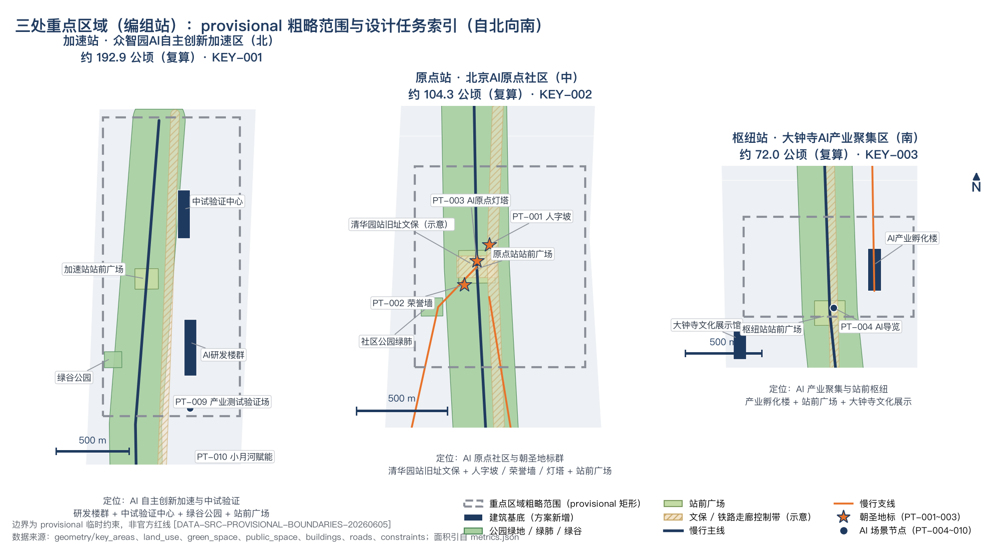
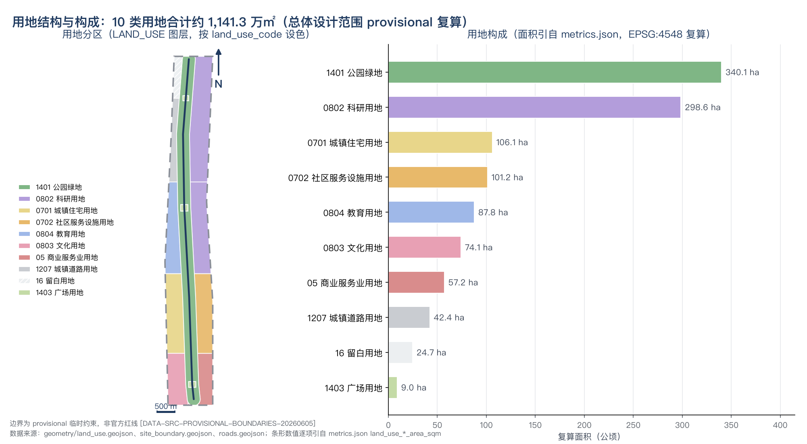
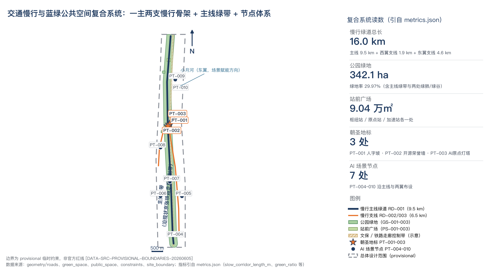
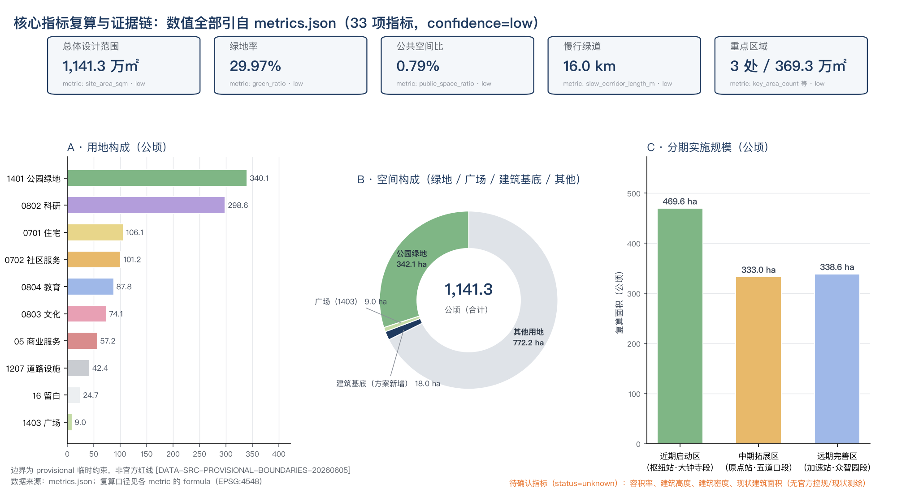

总览地图
三层范围嵌套与主线走廊：统筹研究范围 → 总体设计范围 → 三处重点区域，自北向南串接加速站、原点站、枢纽站。面积均为 provisional 复算值，正式数据发布后需复算。

主线 Mainline
京张遗址公园活力带：主线公园绿地（GS-001）＋慢行主线（RD-001，大钟寺站—清华园站—北延段），遗产展示、慢行连通与公共生活三重复合。
编组站 Yards ×3
加速站·众智园（AI 全栈自主创新）、原点站·北京AI原点社区（近校成果转化）、枢纽站·大钟寺（智能原生新业态）。
支线 Branches ×2
西翼要素支线（RD-002，中关村科技服务翼）注入资本与知产服务；东翼场景支线（RD-003，小月河场景赋能翼）开放真实城市测试。
车站 Stops ×10
7 处 AI 场景节点（PT-004–PT-010）＋ 3 处朝圣地标（PT-001 人字坡 / PT-002 开源荣誉墙 / PT-003 AI原点灯塔），全部落图。
三层范围
「战略—结构—实施」递进校验链：统筹研究范围决定产业与城市形态判断，总体设计范围落到用地与公共空间结构，重点区域范围验证可实施性。三层边界均为临时替代边界（PROV 系列），官方口径面积与复算值并列。
产业与未来城市研究
北至北五环路，东至京藏高速，南至西直门外大街，西至万泉河路。产出：AI 创新生态、未来城市形态、命名体系与全球案例校准。
控规深度城市设计
京张遗址公园周边 1–2 公里；北至北五环路，东至学院路、西土城路等，南至西直门外大街，西至大钟寺东路、荷清路等。产出：用地、建筑、道路、绿地、公共空间等 9 个图层。
规划综合实施方案深度
自北向南：众智园AI自主创新加速区、北京AI原点社区、大钟寺AI产业集聚区。复算值与官方口径的约 0.9 公顷级差异即 provisional_rough 精度偏差。
重点区域
三座「编组站」各承担不同产业分工，按「定位＋空间结构＋建筑更新＋交通慢行＋公共空间＋AI 场景＋实施风险」组织详细设计；三处 polygon 均为临时边界，结论只作方向性设计。

加速站 · 众智园AI自主创新加速区
定位：AI 全栈自主创新体系与 AI 治理话语权，花园型研发街区（概念建议）。「研发环绿谷」结构：科研产业区（LU-011）＋绿谷公园（GS-003）＋站前广场（PS-003）。
- 概念基底：AI研发楼群（BLDG-001）、中试验证中心（BLDG-007）
- AI 场景：PT-009 产业测试验证场、PT-007 智慧林荫慢跑道
- 分期：远期完善区（PHASE-003），依赖控规、蓝线与权属确认
原点站 · 北京AI原点社区
定位：世界级 AI 创新生态策源，「高校—园区—社区」缝合的近校创新社区（概念建议）。东翼科研区（LU-009）与五道口高校教育区（LU-010）南北呼应。
- 概念基底：AI研发院落（BLDG-002）、五道口AI教育实训中心（BLDG-005）
- 巡礼地标：PT-001 人字坡纪念节点、PT-003 AI原点灯塔、PT-002 开源荣誉墙（均由北向南串联）
- 分期：中期拓展区（PHASE-002）；避让清华园车站旧址文保控制范围（示意，CONS-001）
枢纽站 · 大钟寺AI产业聚集区
定位：智能原生新业态与国际交往，城市型智能经济街区（概念建议）。商业服务区（LU-005）与文化展示区（LU-006）东西分翼，站前广场（PS-001）为核心节点。
- 概念基底：AI产业孵化楼（BLDG-003）、大钟寺文化展示馆（BLDG-004）
- AI 场景：PT-004 导览服务节点（卡 01）
- 分期：近期启动区（PHASE-001），轻量设施与运营活动先行（概念建议）
用地分区
用地按《国土空间调查、规划、用途管制用地用海分类指南》分类，land_use 图层 13 个 polygon 对临时边界闭合切分。结构判断：研发为主、生活为底、公园为轴——创新功能（科研＋教育＋文化＋商业服务）合计约 45%，居住与社区服务约 18%，公园绿地与广场约 31%。比例为设计建议口径，非控规指标。

| 代码 | 类别 | 复算面积（㎡） | 约（公顷） | 占比 | 设计含义（概念建议） |
|---|---|---|---|---|---|
| 1401 | 公园绿地 | 3,401,133.496 | 340.1 | 29.8% | 主线公园绿地以贯通与复合利用为先 |
| 0802 | 科研用地 | 2,986,335.247 | 298.6 | 26.2% | 编组站研发与中试功能主体 |
| 0701 | 城镇住宅用地 | 1,060,941.316 | 106.1 | 9.3% | 人才居住与生活底盘 |
| 0702 | 城镇社区服务设施用地 | 1,011,897.167 | 101.2 | 8.9% | 社区服务与日常交往 |
| 0804 | 教育用地 | 878,068.168 | 87.8 | 7.7% | 高校教育区与科普实训 |
| 0803 | 文化用地 | 741,223.781 | 74.1 | 6.5% | 遗产展示与文化叙事载体 |
| 05 | 商业服务业用地 | 571,889.113 | 57.2 | 5.0% | 枢纽站智能原生新业态界面 |
| 1207 | 城镇道路用地 | 423,705.552 | 42.4 | 3.7% | 道路红线与断面待官方资料确认 |
| 16 | 留白用地 | 247,241.162 | 24.7 | 2.2% | 为不确定的产业演进保留弹性 |
| 1403 | 广场用地 | 90,400.814 | 9.0 | 0.8% | 三处站前广场（PS-001/002/003） |
交通慢行
立场是「慢行可落图，其余只写方向」：一主两支绿道是本方案唯一能复算的交通证据；轨道接驳、道路红线、断面与停车组织均无公开资料，一律列为待确认，不写成审定条件。

一主两支
主线 RD-001 大钟寺站—清华园站—北延段；西翼支线 RD-002 缝合校区园区街区；东翼支线 RD-003 沿小月河组织场景测试。北五环跨环路、五道口、清华东路西口等断点缝合列入更新项目清单。
待确认（方向性策略）
大钟寺站一体化与路口四象限步行连通、清华园站站前衔接、对外通道衔接均为概念建议；轨道站点资料、道路红线与断面、交叉口市政管线未公开获得，线位与工程可行性结论待确认。
蓝绿公共空间
「一廊两肺」蓝绿骨架：主线绿带（GS-001）＋原点站社区公园绿肺（GS-002）＋加速站绿谷公园（GS-003）。绿地充足而广场型公共空间相对偏少——设计建议沿主线与三个站前节点增补口袋公园并推动广场复合利用（概念建议）。
巡礼 Pilgrimage · 序列起点（最北）
PT-001 人字坡纪念节点（原点站站前广场 PS-002 一侧）：以詹天佑「人」字形折返线为原型的地面铺装与序列装置，把「自主干线」精神转译为可步行的纪念场景；图形全部自绘清权（概念建议）。
巡礼 Pilgrimage · 南段收尾
PT-002 开源荣誉墙（原点站主线一侧）：「站台铭牌」荣誉体系——开源项目、开发者与贡献机构的展示采用提名、评审与定期轮换制度（概念建议），铭牌内容须经版权与事实核查。
巡礼 Pilgrimage · 序列中段
PT-003 AI原点灯塔（原点站社区公园一侧）：轻量化构筑物作为「北京AI原点」空间标识；任何建设概念须避让清华园车站旧址文保控制范围（示意）并待文保测绘确认。
建筑
提交图层仅含 7 个概念建筑基底，只表达功能布局意图，不构成建筑方案；拆改留只有方法框架、没有地块结论。容积率、建筑高度、建筑密度与现状建筑面积无官方控规/现状测绘支撑，在指标体系中保持 unknown、列为待确认，不得以推测值冒充审定指标。
| 编号 | 概念基底 | 所在编组站/片区 | 概念功能 |
|---|---|---|---|
| BLDG-001 | 加速站AI研发楼群基底 | 加速站 | AI 全栈研发（概念） |
| BLDG-007 | 加速站中试验证中心基底 | 加速站 | 中试与测试验证（概念） |
| BLDG-002 | 原点站AI研发院落基底 | 原点站 | 近校成果转化（概念） |
| BLDG-005 | 五道口AI教育实训中心基底 | 原点站 | 教育实训与科普（概念） |
| BLDG-003 | 枢纽站AI产业孵化楼基底 | 枢纽站 | 产业孵化（概念） |
| BLDG-004 | 大钟寺文化展示馆基底 | 枢纽站 | 文化展示（概念） |
| BLDG-006 | 东翼社区服务中心基底 | 东翼社区服务区 | 社区服务（概念） |
更新项目
九个项目按近、中、远三期组织，全部为概念建议，实施主体为概念性建议，不构成授权、承诺或投资结论。原则：轻量设施与运营活动先行、工程建设待条件。征集的 100 天设计周期与实施分期是两套时间轴，不得混用。
| 期别 | 项目名称 | 类型 | 位置（图层映射） | 依赖条件 |
|---|---|---|---|---|
| 近期 | 枢纽站站前广场复合激活 | 公共空间/运营 | PS-001 | 公共空间使用许可、活动安全评估 |
| 近期 | 慢行主线南段断点缝合 | 交通/慢行 | RD-001 | 道路红线、桥下空间与交通组织复核 |
| 中期 | 人字坡纪念节点与巡礼路线（原点站段） | 文化/公共空间 | PT-001 | 版权清权、文保条件复核 |
| 中期 | 原点站近校成果转化街区 | 城市更新/产业服务 | BLDG-002 · LU-009 | 校区边界、权属与首层业态确认 |
| 中期 | 开源荣誉墙与铭牌荣誉体系 | 文化/运营 | PT-002 | 提名评审机制、内容版权核查 |
| 中期 | AI 教育实训与科普体验 | 公共服务 | BLDG-005 · PT-008 | 教育内容审核、未成年人保护机制 |
| 远期 | 加速站中试验证中心与测试验证场 | 产业/新基建 | BLDG-007 · PT-009 | 控规条件、测试规程与安全评估 |
| 远期 | 绿谷公园与清河界面深化 | 蓝绿空间 | GS-003 | 河道蓝线、生态与防洪条件 |
| 远期 | 小月河场景赋能开放实验带 | 场景/运营 | PT-010 · RD-003 | 数据合规、场景开放审批 |
AI 场景
10 张场景卡全部映射到具体图层 feature：6 个注册标准场景为骨架＋4 张本地方案卡；每张卡都写明服务对象、空间位置、运行数据、隐私边界、人工复核、运营主体与风险。卡 06/07/10 为产业测试验证场景，须经主管部门与专业团队评估后方可试点，非已批准运营。
「巡礼」讲解系统，串联主线车站序列；不采集个人轨迹与人脸。
ai-cultural-guide识别慢行断点，低侵入匿名计数；输出只作概念建议。
ai-traffic-walkability公共服务导航，不采集个人健康信息；内容专业复核。
ai-health-service-navigation政策与服务目录问答，不读取企业内部数据，保留人工入口。
enterprise-service-copilot只做风险模式提示、不设个人识别；安全判断人工兜底。
public-safety-operations-review低速、可监管、可撤回路线；车载传感不采集人脸，数据本地化。
robot-delivery-low-speed测试数据分级授权、不出域；规程由标准与安全治理专家复核。
本地方案卡匿名化使用计数＋公开环境数据；不采集个人运动数据。
本地方案卡未成年人数据不采集、不画像；教育内容人工审核。
本地方案卡场景开放以「可监管、可撤回」为前提，数据分级授权。
本地方案卡核心指标
29 项已知指标全部由提交图层在 EPSG:4548 下复算，公式与来源文件逐条登记于 metrics.json，本页数值与其逐字一致；4 项管控指标（容积率/建筑高度/建筑密度/现状建筑面积）保持 unknown 待确认。全部指标 confidence=low，因为边界为 provisional 替代。

范围与分区（㎡，复算）
蓝绿与比例
交通、建筑与节点
任务覆盖
compliance_matrix.json 覆盖公告 1.3/1.4/1.5 与 agent.1–agent.6 共 23 条必选任务，每条挂接报告章节、图层、指标、图纸、可视化板块、来源、假设与自检项；standard_matrix.json 覆盖 6 项标准（5 项 addressed、1 项 data_gap），design_depth_matrix.json 覆盖 15 项设计深度（全部 complete）。任一必选任务未覆盖即不得进入 formal professional scoring。
| 任务 | 标题 | 本页对应板块 |
|---|---|---|
| 1.3.1 | 构建世界级AI创新生态体系 | 总览地图 · AI 场景 |
| 1.3.2 | 建设适配AI新质生产力的新型城市形态 | 总览地图 · 三层范围 |
| 1.3.3 | 打造全球AI创新人才向往的高品质城区 | 总览地图 · AI 场景 |
| 1.4.1 | 统筹研究范围 | 三层范围 · 总览地图 |
| 1.4.2 | 总体设计范围 | 三层范围 · 总览地图 · 核心指标 |
| 1.4.3 | 重点区域范围 | 三层范围 · 重点区域 |
| 1.5.1.1 | 统筹研究范围：AI创新生态体系 | AI 场景 · 总览地图 |
| 1.5.1.2 | 统筹研究范围：适配人工智能的未来城市形态 | 总览地图 · 三层范围 |
| 1.5.2.1 | 总体设计范围：产业目标与功能布局 | 总览地图 · 核心指标 |
| 1.5.2.2 | 总体设计范围：城市更新总体框架 | 总览地图 · 任务覆盖 |
| 1.5.2.3 | 总体设计范围：交通轨道市政配套设施 | 总览地图 · 交通慢行 |
| 1.5.2.4 | 总体设计范围：京张遗址公园活力带 | 总览地图 · 蓝绿公共空间 |
| 1.5.2.5 | 总体设计范围：城市风貌 | 总览地图 · AI 场景 |
| 1.5.3.required | 重点区域范围详细设计必选项 | 重点区域 |
| 1.5.3.1 | 众智园AI自主创新加速区 | 重点区域（加速站） |
| 1.5.3.2 | 北京AI原点社区 | 重点区域（原点站） |
| 1.5.3.3 | 大钟寺AI产业聚集区 | 重点区域（枢纽站） |
| agent.1 | 一带总体概念与功能统筹方案设计 | 总览地图 · 三层范围 |
| agent.2 | AI全栈自主创新体系与世界级AI创新生态设计 | AI 场景 |
| agent.3 | AI+场景赋能新范式与智能化AI活力城市设计 | AI 场景 |
| agent.4 | AI公共空间、智能原生新业态与朝圣地标设计 | AI 场景 · 总览地图 |
| agent.5 | 百年京张文化、中关村文化与AI新文化融合叙事设计 | 总览地图 · 蓝绿公共空间 |
| agent.6 | 一带全球AI创新活动体系与长期运营设计 | 任务覆盖 · AI 场景 · 更新项目 |
自检状态
self_check.json 登记 7 项自检，当前全部 PASS；deterministic validation、spatial review、visual packaging check 与 professional evidence review 在提交定稿时运行并随包更新。任一图层或指标修改都触发哈希刷新与全量复核。
临时替代边界在 proposal 第 1/2/12 章明确标注非官方红线；官方 polygon 发布即触发 9 图层与面积指标全量重算。
三处重点区（KEY-001/002/003）为公告文字派生的 provisional 粗略范围，仅用于概念性详细设计。
13 个用地 polygon 合法编码、对临时边界闭合切分、无声明缺口或重叠；分地类面积已复算登记。
10 张场景卡均含数据最小化、隐私边界、人工复核、运营主体与退出条件；卡 06/07/10 标注为测试验证场景。
本页为单一静态 HTML：无脚本、无远程资源、无 iframe、无表单、无跟踪（模式扫描验证）。
proposal 引用全部 13 条来源、29 项已知指标、9 个图层、6 项标准与 15 项深度项；引用闭经由脚本核验。
文本与代码由申报智能体生成；5 张图由提交几何与指标自绘；不使用外部图片、字体、商标与人物肖像。
scripts/spatial_review.py 与 scripts/visual_review.py 为 formal 自检提供空间与可视化复核证据。来源
sources.json 登记 13 条证据源：官方与项目文件、临时边界依据、公开二手案例三类。本方案不引入任何非公开资料；不使用商业地图瓦片或新闻图片作边界依据；案例只校准结构与机制判断，不支撑数值、投资或运营承诺。
官方与项目文件（formal-ready）
- OFFICIAL-ANNOUNCEMENT · 征集资格预审公告（北京市规划和自然资源委员会海淀分局，2026-05-09）
- AGENT-TASKBOOK · 面向全球智能体开源征集任务书（brief/site-package/agent_taskbook.json）
- SITE-PACKAGE · 设计简报、枚举、范围与标准（brief/site-package/）
- SOURCE-REGISTRY · 资料可用性登记（data/source_registry.json）
- PROCESSED-FACT-PACK · 智能体阅读导航层（data/processed/agent_fact_pack.md）
临时边界依据（provisional-only）
- BOUNDARY-SOURCE · 总体设计范围粗略替代边界，非官方红线
- KEY-AREA-SOURCE · 三处重点区粗略范围，非官方红线
仅用于方案生成、自检与可视化；正式数据发布后需替换并重算。
全球案例（background-only 公开二手资料）
- CASE-KENDALL · 波士顿剑桥 Kendall Square
- CASE-KNOWLEDGE-QUARTER · 伦敦 Knowledge Quarter
- CASE-SIDEWALK-QUAYSIDE · 多伦多 Quayside（数据治理教训）
- CASE-PITTSBURGH-ROBOTICS · 匹兹堡机器人生态（CMU）
- CASE-QIANHAI · 深圳前海
- CASE-CORNELL-TECH · 纽约 Cornell Tech
假设
assumptions.json 登记 7 项假设与待确认事项，对应缺资料清单九项缺口；凡涉及容积率、建筑高度、拆改留结论、道路线位与投资测算的内容一律列为待确认。
控规、道路红线、权属、市政与工程约束须以官方附件确认后方可作法定用途；法定控制内容仍待专业确认。
三层范围与三处重点区边界均为临时替代（非官方红线）；9 个图层与全部面积/比例指标须在官方数据发布后重算复检。
无官方控规指标公开；容积率、建筑高度、建筑密度与现状建筑面积保持 unknown，不得以推测值冒充审定指标。
无现状建筑测绘、权属、文保与市政资料；拆改留仅为方法框架，更新项目携带依赖条件而非承诺。
六个全球案例为公开二手来源（Wikipedia 页面）；只校准结构判断，不作企业名单、投资额与产值结论。
全部面积、比例与长度为 EPSG:4548 下复算近似值（confidence=low）；与官方口径的差异属 provisional_rough 精度偏差。
时刻表、巡礼运营、铭牌荣誉体系、场景试点与实施主体均为概念建议，无授权、许可或资金承诺；试点须经主管部门与专业团队评估。